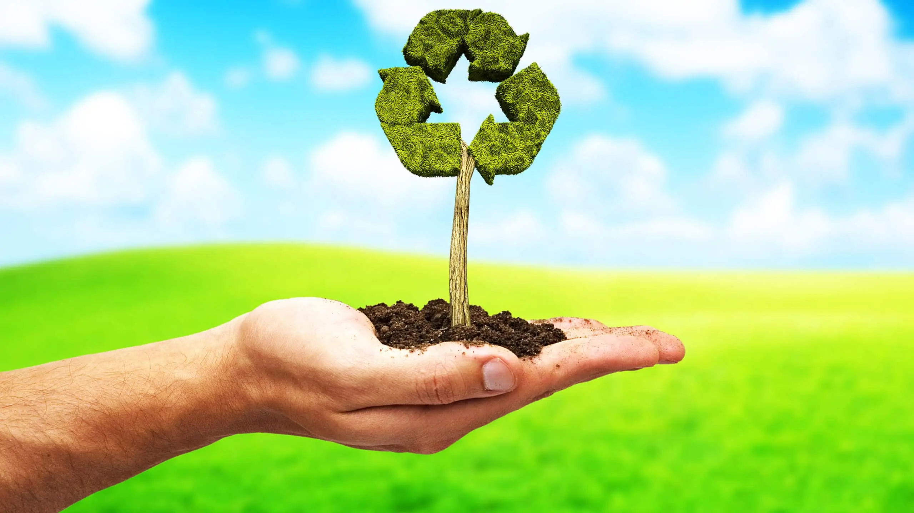
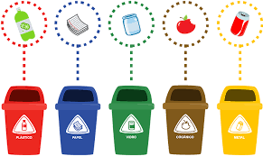
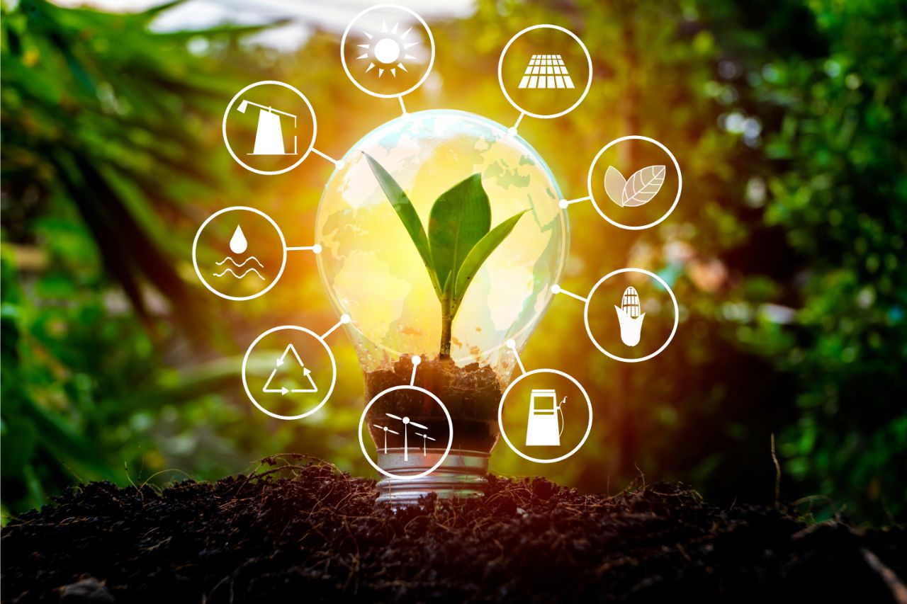

Por que a Reciclagem é Importante?
A reciclagem desempenha um papel crucial na preservação do meio ambiente e na conservação dos recursos naturais. Aqui estão alguns motivos pelos quais a reciclagem é fundamental
1. Redução do Impacto Ambiental
A reciclagem ajuda a reduzir a quantidade de resíduos enviados para aterros sanitários, minimizando assim o impacto negativo no meio ambiente.

2.Conservação de Recursos Naturais?
A reciclagem permite que materiais como papel, plástico e metal sejam reutilizados, reduzindo a necessidade de extrair recursos naturais, como árvores e minerais.
3. Redução da Poluição
A reciclagem ajuda a diminuir a quantidade de poluição causada pela produção de novos materiais, como emissões de carbono e poluição do ar e da água.
4. Estímulo à Economia Circular
A reciclagem faz parte do conceito de economia circular, onde os materiais são continuamente reutilizados, reduzindo a dependência de recursos virgens e promovendo a sustentabilidade.
